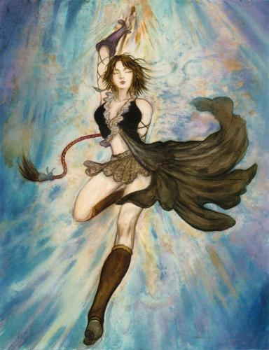

Forums galactiques > Assemblée Galactique : diplomatie officielle > L'affrontement
Pages : 1
| Dame Yuna Respect diplomatique : 17  29/06 ETU 16:57 | Score : 8 Détails RP privé bien sur ^^
Alerte de niveau 3 Alerte de niveau 3 Tous les hommes sont obligés de se rendre sur leurs vaisseaux et de se rendre au poste d'instruction le plus proche Alerte de niveau 3 Alerte de niveau 3 Que quoi ... Que se passe t'il ? Yuna était dans sa chambre, elle dormait ou plutot cauchemardait Elle voyait des démons détruire les villes sur leurs passages Elle les voyaient étriper d'innocentes personnes Elle prenait à peine conscience quand son général supreme des armées arriva en courant dans son uniforme de guerre Madame, Madame réveillez-vous C'est horrible... Ils... , Ils... Que ce passe t'il !? Les... Les Démons , Ils détruisent tout , Ils ont mit à feu et à sang plusieurs villes de Zanarkande Comment ca! Ils avaient promis de ne rien faire! Madame ,un Démon peut-il tenir ses promesses ? Maintenant j'en suis sur que non! Dites aux hommes de se préparer à combatre à bord de leurs vaisseaux et aussi à terre Qui sait ce qu'ils nous réservent... Bien Madame Galariel (le général supreme des armées de Yuna)sortit laissant Yuna seul avec ses pensées Elle revoyait les horribles visions de ses cauchemars Je suis désolé père J'ai faillit à ma tâche Ils sont revenus à cause de moi je ferais tout pour les détruire définitivement Yuna s'habilla de sa tenue qu'elle mettait habituellement au combat On pouvait la distinguer de loin avec sa robe blanche qui réflétait les rayons du soleil Ainsi ses hommes la suivraient au combat Quand elle fut habillé, elle se diriga vers une vieille armoire avec une serrure de fer rouillé. Elle souffla dessus. La serrure cliquetiqua et l'armoire s'ouvrit On pouvait apercevoir au centre une lueur blanche s'échappant du bout d'un sceptre Yuna le prit et sortit de la piece HRP: dsl si ces le même RP que sur Espérance mais je manque de temp pour en faire un autre ... |
Pages : 1
Forums galactiques > Assemblée Galactique : diplomatie officielle > L'affrontement